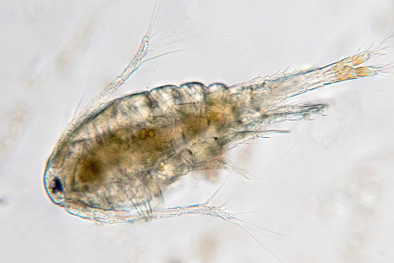

Descrição de Ecossistemas lêticos:
Os ecossistemas lênticos são definidos pela presença de água parada ou com pouco movimento
eles são representados por lagos, lagoas, reservatórios ou charcos, nos quais o tempo de residência (tempo que a água permanece no sistema)
costuma ser alto pois o seu fluxo é baixo.
Os lagos possuem uma grande riqueza biótica adaptada para habitar suas diferentes porções (margem ou coluna d’água e zona bentônica ou fundo), que apresentam condições abióticas muito distintas entre si.
As bactérias ocupam todas as zonas de um ecossistema lêntico, sendo vitais para a decomposição de matéria orgânica na região profunda afótica (com pouca ou nenhuma luz).
assim como em ambientes lóticos, os principais produtos primários em lagos são as algas.
Os zooplânctons, juntamente com pequenos peixes e larvas de peixes e insetos, são os consumidores primários mais comuns de ambientes lênticos.
O zooplâncton é formado por invertebrados microscópicos, sendo estes comumente crustáceos, protistas e ciliados.
Abaixo algumas informações sobre as Bactérias citadas:
Zooplanctons
Características dos zooplâncton:
Como mencionado, zooplâncton são organismos heterotróficos que vivem em suspensão na água.
Para isso, eles contam com algumas importantes características,
tais como massa corporal reduzida, pequeno tamanho, alto teor de água em seu corpo,
e superfície corporal maior que o volume.